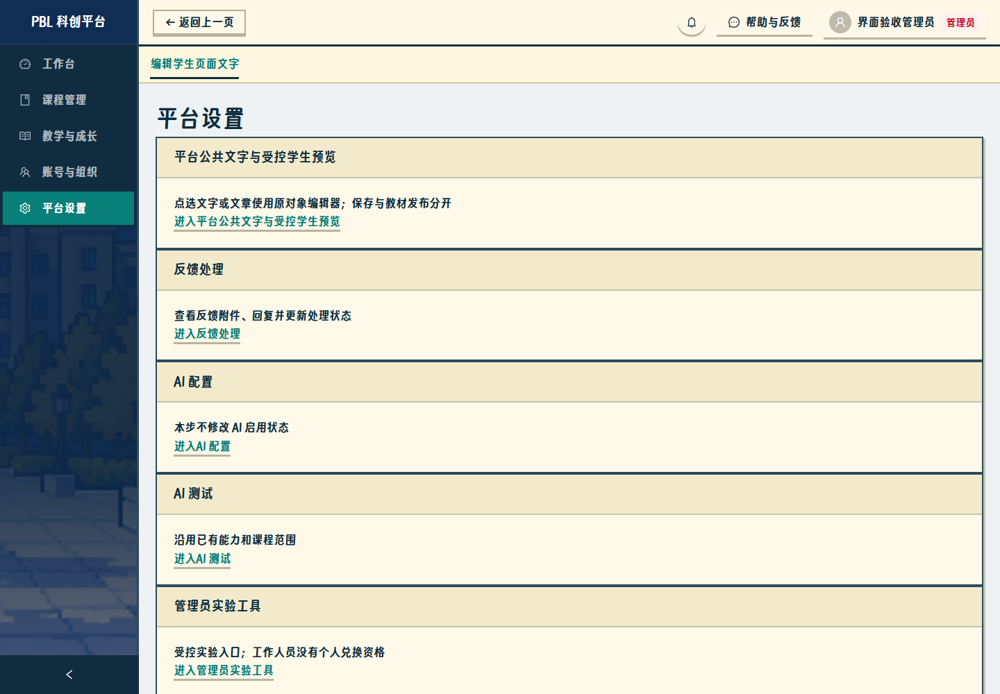
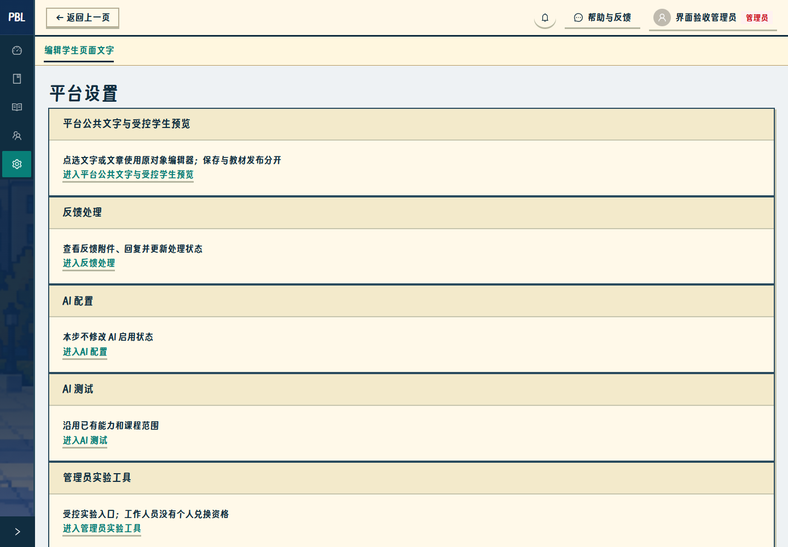
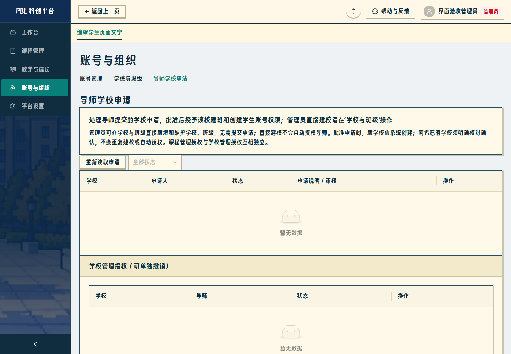
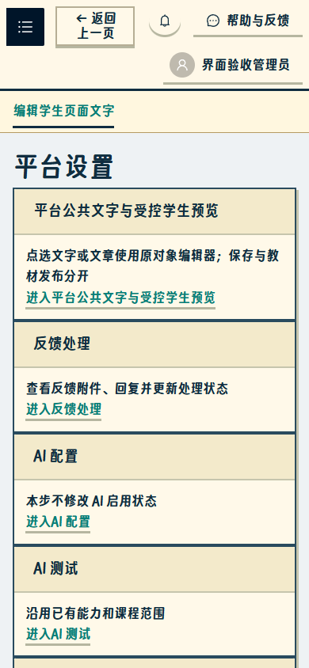
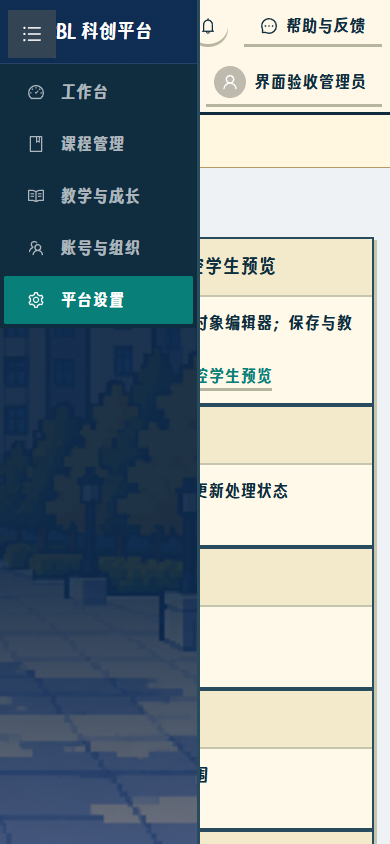

管理端界面补修：侧栏图标与学校申请说明
实际 Edge 浏览器截图。桌面 1440×1000、手机 390×844；合成隔离账号，无正式教学数据写入。
补修说明 · 验证记录 · 4186 实际操作预览
1. 展开侧栏：五项图标、文字及当前选中状态
2. 桌面收起：64px 图标栏，保留五个入口
3. 导师学校申请：说明直接建校、审批用途及授权边界
4. 手机收起：零宽侧栏，保留左上唤起按钮
5. 手机唤起：临时展开菜单，选择后自动收回
本轮无后端、权限或数据库修改，无 PR、无公网部署。完成后等待复核。